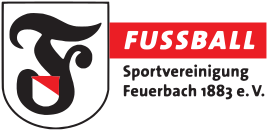
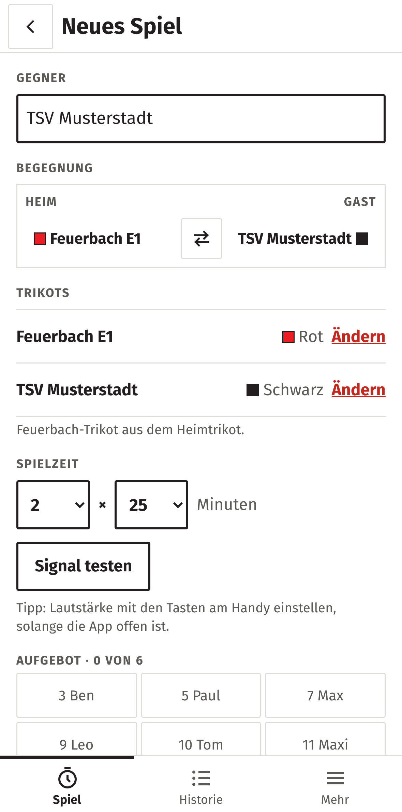
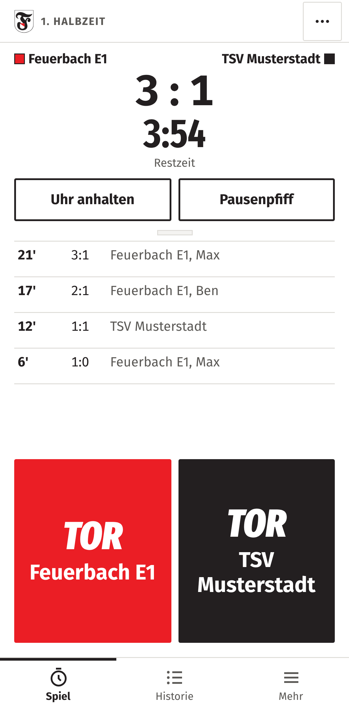
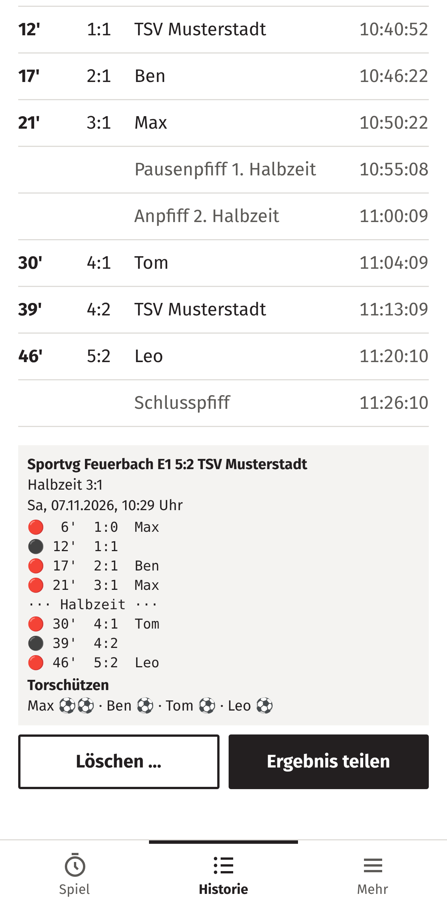

TORTICKER

Vom Spielfeldrand, für den Spielfeldrand.
Ein Tap pro Tor. Den Spielbericht schreibt die App.
Das Problem
- Coachen und nebenbei Zeit und Tore zählen
- Wer traf wann? Später weiß es keiner genau
- Ergebnis mühsam in die Elterngruppe tippen
Wofür der Torticker da ist
Dein Handy wird zur Anzeigetafel: Tore, Spielzeit, Pfiff zur Halbzeit. Nach dem Abpfiff ist der Spielbericht für WhatsApp fertig.



- Torschützen per Tap
- Läuft offline am Platz
- Kostenlos, ohne Konto
- Daten bleiben bei dir
Teste am
Wochenende mit
benztown711.github.io/
feuerbach-torticker
SCANNEN
-
Link öffnen und auf den Home-Bildschirm legen.
iPhone: Safari → Teilen → „Zum Home-Bildschirm“
Android: Chrome → Menü → „App installieren“ - Beim Spiel mitlaufen lassen.
- Kurz sagen, was fehlt oder stört.
Testversion für Trainerteams und Eltern der Sportvg Feuerbach. Gerne weiterleiten. Rückmeldung an Attila oder dein Trainerteam.